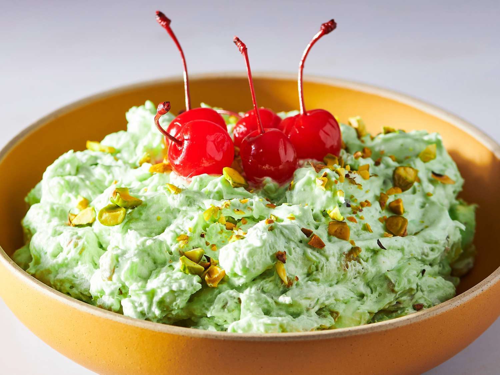

Watergate Salad

Description
Watergate salad is an American classic. This delightful side dish salad or dessert is made with pistachio-flavored instant pudding mix, canned pineapple, mini marshmallows, nuts, and whipped topping. It comes together in minutes and after one to two hours in the refrigerator, this chilly treat will impress your dinner guests with it's light and fluffy texture and colorful appeal. Garnish with crushed pistachios and maraschino cherries.
Ingredients
- 1 (3.4 ounce) package instant pistachio pudding mix
- 1 (8 ounce) can crushed pineapple, with juice
- 1 cup miniature marshmallows
- ½ cup chopped walnuts
- 4 ounces frozen whipped topping, thawed
Steps
- Gather all ingredients.
- Combine crushed pineapple with juice, instant pudding mix, mini marshmallows, and walnuts in a large serving bowl. Mix until well combined.
- Fold in whipped topping, then chill for 1 to 2 hours before serving.
- When ready to serve, garnish with crushed pistachios and maraschino cherries.
- Enjoy!
Home